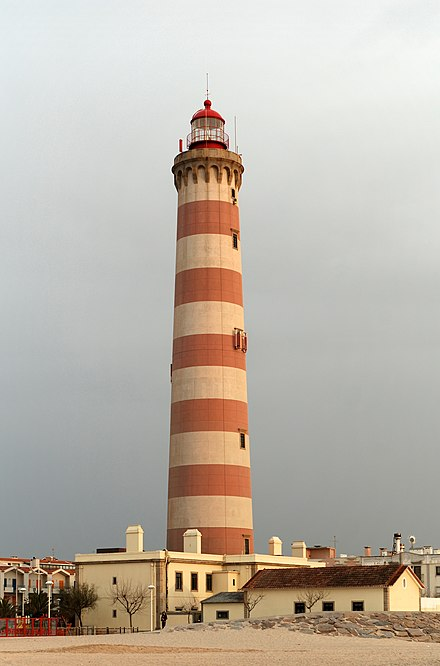

History
Ancient Lighthouses
Before the development of clearly defined ports, mariners were guided by fires built on hilltops. Since elevating the fire would improve visibility, placing the fire on a platform became a practice that led to the development of the lighthouse.[1] In antiquity, the lighthouse functioned more as an entrance marker to ports than as a warning signal for reefs and promontories, unlike many modern lighthouses. The most famous lighthouse structure from antiquity was the Pharos of Alexandria, Egypt, which collapsed following a series of earthquakes between 956 CE and 1323 CE.
The intact Tower of Hercules at A Coruña, Spain gives insight into ancient lighthouse construction; other evidence about lighthouses exists in depictions on coins and mosaics, of which many represent the lighthouse at Ostia. Coins from Alexandria, Ostia, and Laodicea in Syria also exist.
Modern Construction
The modern era of lighthouses began at the turn of the 18th century, as the number of lighthouses being constructed increased significantly due to much higher levels of transatlantic commerce. Advances in structural engineering and new and efficient lighting equipment allowed for the creation of larger and more powerful lighthouses, including ones exposed to the sea. The function of lighthouses was gradually changed from indicating ports to the providing of a visible warning against shipping hazards, such as rocks or reefs.
The Eddystone Rocks were a major shipwreck hazard for mariners sailing through the English Channel.[2] The first lighthouse built there was an octagonal wooden structure, anchored by 12 iron stanchions secured in the rock, and was built by Henry Winstanley from 1696 to 1698. His lighthouse was the first tower in the world to have been fully exposed to the open sea.[3]